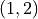
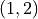
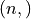
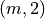
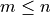

visiannot.tools.ToolsPyqtgraph¶
Module with sub-classes and functions for scientific graphics with pyqtgraph
See https://pyqtgraph.readthedocs.io/en/latest
Summary¶
Classes¶
Create a new PlotItem. |
|
Subclass of pyqtgraph.PlotWidget that defines the widget used as a progression bar for video/signal navigation in |
|
Subclass of pyqtgraph.PlotWidget so that he effect of “auto-range” button is applied only on Y axis |
Functions¶
Adds a legend to a 2D widget |
|
Adds a plot item to a 2D widget, a vertical line is associated to each point of the plot item, particularly useful to display a mean/median curve with the standard deviation |
|
Adds a plot item to a 2D widget |
|
Adds a text item to a 2D widget |
|
Creates a window with a 2D plot |
|
Creates a window with an image |
|
Creates a 2D widget and adds it to a grid layout |
|
Creates a color map |
|
Creates a widget with a color bar (useful for the legend of a heat map) |
|
Creates a widget containing an image and adds it to a grid layout |
|
Creates a widget with no mouse interaction containing an image and adds it to a grid layout |
|
Creates a widget for plotting signals (see |
|
Deletes NaNs from an array so that they are ignored for plotting |
|
|
Creates a Qt application for display and sets background color of the pyqtgraph widgets |
Sets background color of pyqtgraph widgets (independent of PyQt5 widgets) |
|
Sets ticks text style of an axis item |
API¶
Class PlotItemCustom¶
Methods:
Re-implemented |
-
class
visiannot.tools.ToolsPyqtgraph.PlotItemCustom(parent=None, name=None, labels=None, title=None, viewBox=None, axisItems=None, enableMenu=True, **kargs)[source]¶ Bases:
pyqtgraph.graphicsItems.PlotItem.PlotItem.PlotItemCreate a new PlotItem. All arguments are optional. Any extra keyword arguments are passed to
PlotItem.plot().Arguments:
title
Title to display at the top of the item. Html is allowed.
labels
A dictionary specifying the axis labels to display:
{'left': (args), 'bottom': (args), ...}
The name of each axis and the corresponding arguments are passed to
PlotItem.setLabel()Optionally, PlotItem my also be initialized with the keyword arguments left, right, top, or bottom to achieve the same effect.name
Registers a name for this view so that others may link to it
viewBox
If specified, the PlotItem will be constructed with this as its ViewBox.
axisItems
Optional dictionary instructing the PlotItem to use pre-constructed items for its axes. The dict keys must be axis names (‘left’, ‘bottom’, ‘right’, ‘top’) and the values must be instances of AxisItem (or at least compatible with AxisItem).
Class ProgressWidget¶
Methods:
Get method for attribute dragged |
|
Get method for attribute first_line |
|
Get method for attribute first_line |
|
Computes the position of the mouse on the X axis in the progress plot coordinates |
|
Get method for attribute nframes |
|
Get method for attribute progress_curve |
|
Get method for attribute progress_plot |
|
|
Re-implemented in order to set the new position of the sliding progression point while dragging |
|
Re-implemented in order to set the new position of the sliding progression point and launch the mouse dragging |
Re-implemented in order to set the new position of the sliding progression point and terminate the mouse dragging |
|
|
Sets a new value for the number of frames in the progress bar |
-
class
visiannot.tools.ToolsPyqtgraph.ProgressWidget(nframes, parent=None, progress_style={'brush': '#F00', 'size': 7, 'symbol': 'o'}, bg_progress_style={'pen': {'color': 'b', 'width': 2}}, line_style={'color': (0, 0, 0), 'width': 2}, title=None, title_style={'color': '#000', 'size': '9pt'}, ticks_color='#000', ticks_size=9, ticks_offset=0)[source]¶ Bases:
pyqtgraph.widgets.PlotWidget.PlotWidgetSubclass of pyqtgraph.PlotWidget that defines the widget used as a progression bar for video/signal navigation in
ViSiAnnoTwindowSee https://pyqtgraph.readthedocs.io/en/latest/widgets/plotwidget.html for details about parent class.
The constructor is re-implemented. It calls the constructor of PlotWidget and adds new attributes.
NB: attributes have the prefix _, so one should use the get methods to access them.
- Parameters
nframes (int) – number of frames in the progress bar
parent – see https://pyqtgraph.readthedocs.io/en/latest/widgets/plotwidget.html
progress_style (dict) – plot style of the sliding progression point
bg_progress_style (dict) – plot style of the background progression bar
line_style (dict) – plot style of the current temporal range bounds
title (str) – progress bar title
title_style (dict) – title style
ticks_color (str or tuple) – color of the ticks text in HEX string or RGB format
ticks_size (float or int) – font size of the ticks text in pt
ticks_offset (int) – ticks text offset
- Author
Raphael Weber
-
getDragged()[source]¶ Get method for attribute dragged
- Returns
specify if the sliding progress point is dragged
- Return type
bool
-
getFirstLine()[source]¶ Get method for attribute first_line
- Returns
start boundary of the current temporal range in the associated
ViSiAnnoTwindow- Return type
pyqtgraph.InfiniteLine
-
getLastLine()[source]¶ Get method for attribute first_line
- Returns
end boundary of the current temporal range in the associated
ViSiAnnoTwindow- Return type
pyqtgraph.InfiniteLine
-
getMouseXPosition(ev)[source]¶ Computes the position of the mouse on the X axis in the progress plot coordinates
- Parameters
ev (QtGui.QMouseEvent) – emitted when the mouse is clicked/moved
- Returns
position of the mouse
- Return type
int
-
getProgressCurve()[source]¶ Get method for attribute progress_curve
- Returns
background progression bar
- Return type
pyqtgraph.PlotCurveItem
-
getProgressPlot()[source]¶ Get method for attribute progress_plot
- Returns
sliding progress point
- Return type
pyqtgraph.ScatterPlotItem
-
mouseMoveEvent(ev)[source]¶ Re-implemented in order to set the new position of the sliding progression point while dragging
- Parameters
ev (QtGui.QMouseEvent) – emitted when the mouse is clicked/moved
- Author
Raphael Weber
-
mousePressEvent(ev)[source]¶ Re-implemented in order to set the new position of the sliding progression point and launch the mouse dragging
- Parameters
ev (QtGui.QMouseEvent) – emitted when the mouse is clicked/moved
- Author
Raphael Weber
Class SignalWidget¶
-
class
visiannot.tools.ToolsPyqtgraph.SignalWidget(parent=None, background='default', **kargs)[source]¶ Bases:
pyqtgraph.widgets.PlotWidget.PlotWidgetSubclass of pyqtgraph.PlotWidget so that he effect of “auto-range” button is applied only on Y axis
The constructor is re-implemented so that a PlotItemCustom instance is used as the central item of the widget.
See https://pyqtgraph.readthedocs.io/en/latest/widgets/plotwidget.html for details about parent class.
Functions¶
-
visiannot.tools.ToolsPyqtgraph.addLegendTo2DWidget(widget, item_dict, size=None, offset=(0, 0), position='inside', legend_wid_size=(0, 0))[source]¶ Adds a legend to a 2D widget
If specified, this function creates a widget dedicated to the legend, instead of having a legend item inside the 2D widget.
- Parameters
widget (pyqtgraph.PlotWidget) – widget containing the plot items to legend
item_dict (dict) – plot items to legend, key is the legend label and value is the associated plot item
size (tuple) – size of the legend item, length 2
(width, height)offset (tuple) – offset position in pixels of the legend item in the widget
position (str) –
legend mode
"inside": legend item inside the widget"right": legend item is in a new widget created at the right side of the widget"bottom": legend is in a new widget created at the bottom side of the 2D widget
legend_wid_size (tuple) – size of the created legend widget, length 2
(width, height)in casepositionis"right"or"bottom"
- Returns
legend (-pyqtgraph.LegendItem) – legend item
legend_widget (pyqtgraph.PlotWidget) – widget containing the legend item if it has been created (otherwise
None)
- Author
Raphael Weber
-
visiannot.tools.ToolsPyqtgraph.addMeanStdPlotTo2DWidget(wid, data_mean, data_std, data_X=None, pen_std_style={'color': 'k'}, n_population_list=[], **kwargs)[source]¶ Adds a plot item to a 2D widget, a vertical line is associated to each point of the plot item, particularly useful to display a mean/median curve with the standard deviation
The method raises an exception if
data_meananddata_stdordata_meananddata_Xdo not have the same length.- Parameters
wid (pyqtgraph.PlotWidget) – widget where to add the plot items
data_mean (numpy array) – mean/median values (1D array)
data_std (numpy array) – standard deviation values (1D array), same length as
data_meandata_X (numpy array) – coordinates of the mean/std values on the X axis (1D array), must have the same length as
data_meanpen_std_style (dict) – style of the standard deviation plot item
n_population_list (list) – number of samples at each point (same length than
data_mean), a text item is then added near each pointkwargs – keyword arguments of the function
ToolsPyqtgraph.addPlotTo2DWidget(), used for the plot item of the mean/median values
- Returns
mean_plot (pyqtgraph.PlotDataItem) – plot item of the mean/median values
std_plot (pyqtgraph.PlotDataItem) – plot item of the standard deviation values
text_item_list (list) – text items (pyqtgraph.TextItem) of the number of samples at each point, empty list if
n_population_listis empty
- Author
Raphael Weber
-
visiannot.tools.ToolsPyqtgraph.addPlotTo2DWidget(widget, data, flag_clear=False, flag_nan_void=True, plot_style={'pen': {'color': 'b', 'width': 1}})[source]¶ Adds a plot item to a 2D widget
For details about plot style, see https://pyqtgraph.readthedocs.io/en/latest/graphicsItems/plotdataitem.html
For details about color, see https://pyqtgraph.readthedocs.io/en/latest/functions.html#color-pen-and-brush-functions
- Parameters
widget (pyqtgraph.PlotWidget) – widget where the plot must be displayed
data (numpy array) –
data to plot, two possibilites:
shape
 , first column contains X values, second column
contains Y values, if only one point to plot make sure to have
shape 
, first column contains X values, second column
contains Y values, if only one point to plot make sure to have
shape shape , only Y values, then X values are the array indexes
flag_clear (bool) – specify if content currently displayed must be cleared before plotting the data
flag_nan_void (bool) –
specify how to handle NaN values
False: default behaviour of pyqtgraphTrue: there is no plotting where NaN
NB: when calling the method
plot.setData(data_array), the behaviour is back to default. If NaNs must be ignored, the functionToolsPyqtgraph.deleteNaNForPlot()must be called before.plot_style (dict) – plot style, keys are keyword arguments of the constructor of pyqtgraph.PlotDataItem, see link above
- Returns
plot item (or a list of pyqtgraph.PlotDataItem in case
nan_voidis true)- Return type
pyqtgraph.PlotDataItem
- Author
Raphael Weber
-
visiannot.tools.ToolsPyqtgraph.addTextItemTo2DWidget(widget, pos, text='', color='#000000', html=None, anchor=(0.5, 0.5), border=None, fill=None, angle=0, flag_arrow=False, arrow_angle=0, arrow_style={'brush': '#000000', 'headLen': 15, 'pen': '#000000', 'tipAngle': 20})[source]¶ Adds a text item to a 2D widget
For details about color, see https://pyqtgraph.readthedocs.io/en/latest/functions.html#color-pen-and-brush-functions
- Parameters
widget (pyqtgraph.PlotWidget) – widget where the text item must be displayed
pos (tuple) – position of the text item in the widget, length 2
(x, y)text (str) – text to display
color (str or tuple) – text color, may be a tuple with RGB or a HEX string
html (str) – html text to display, it overwrites
textandcoloranchor (tuple) – coordinate of the text item that is anchored to its position
pos((0, 0)=> top left,(1, 0)=> top right,(1, 0)=> bottom left,(1, 1)=> bottom rightborder (str or tuple) – color of the border, may be a tuple with RGB or a HEX string
fill (str or tuple) – color used when filling within the border, may be a tuple with RGB or a HEX
angle (float) – angle in degrees to rotate the text item
flag_arrow (bool) – specify if an arrow must be added
arrow_angle (float) – angle in degrees to rotate the arrow (arrow pointing to the left)
arrow_style (dict) – see https://pyqtgraph.readthedocs.io/en/latest/graphicsItems/arrowitem.html#pyqtgraph.ArrowItem.setStyle
- Returns
text_item (pyqtgraph.TextItem)
arrow_item (pyqtgraph.ArrowItem) – may be
Noneif arrow not specified
- Author
Raphael Weber
-
visiannot.tools.ToolsPyqtgraph.basic2DPlot(data, opts_win_dict={}, opts_wid_dict={}, plot_style={'pen': {'color': 'b', 'width': 1}})[source]¶ Creates a window with a 2D plot
For details about plot style, see https://pyqtgraph.readthedocs.io/en/latest/graphicsItems/plotdataitem.html
For details about color, see https://pyqtgraph.readthedocs.io/en/latest/functions.html#color-pen-and-brush-functions
- Parameters
data (numpy array) –
data to plot, two possibilites:
shape
, first column contains X values, second column
contains Y values, if only one point to plot make sure to have
shape shape , only Y values, then X values are the array indexes
opts_win_dict (dict) – keyword arguments of the function
ToolsPyQt.createWindow()opts_wid_dict (dict) – keyword arguments of the function
ToolsPyqtgraph.create2DWidget()plot_style (dict) – plot style, keys are keyword arguments of the constructor of pyqtgraph.PlotDataItem, see link above
- Returns
win (QWidgets.QWidget) – window container
lay (QWidgets.QGridLayout) – layout
widget (pyqtgraph.PlotWidget) – 2D widget filling the whole layout
plot (pyqtgraph.PlotDataItem) – plot item
- Author
Raphael Weber
-
visiannot.tools.ToolsPyqtgraph.basicImagePlot(im, **kwargs)[source]¶ Creates a window with an image
- Parameters
im (numpy array) – RGB image array of shape

kwargs – keyword arguments of the function
ToolsPyQt.createWindow(), if background color of the window is specified, then it is also applied to the image widget
- Returns
win (QWidgets.QWidget) – window container
lay (QWidgets.QGridLayout) – layout
widget (pyqtgraph.PlotWidget) – 2D widget filling the whole layout
img (pyqtgraph.ImageItem) – image item
- Author
Raphael Weber
-
visiannot.tools.ToolsPyqtgraph.create2DWidget(lay, widget_position, widget_size=(0, 0), widget_title=None, title_style={'color': '#0000', 'size': '9pt'}, x_range=[], y_range=[], axes_label_dict={'bottom': None, 'left': None}, flag_invert_x=False, flag_invert_y=False, flag_aspect_locked=False, flag_plot_menu=True)[source]¶ Creates a 2D widget and adds it to a grid layout
The widget content is empty.
- Parameters
lay (QtWidgets.QGridLayout) – parent layout where the widget is added
widget_position (tuple) – position of the widget in the parent layout, length 2
(row, col)or 4(row, col, rowspan, colspan)widget_size (tuple) – maximum size of the widget, length 2
(width, height), set a value to 0 in order to have an automatic sizing in the corresponding axiswidget_title (str) – widget title, basic HTML allowed
title_style (dict) – title style
x_range (tuple) – range values on the X axis, length 2
(x_min, x_max)y_range (tuple) – range values on the Y axis, length 2
(y_min, y_max)axes_label_dict (dict) –
axes to show and their respective label
Key is the axis identifier (
"left","right","bottom"or"top")Value is the associated label as a list of length 2:
axis label (str)
label style (dict), e.g.
{'color': '#000', 'font-size': '10pt'}
In case no label is associated to the axis, set the corresponding value to
None
flag_invert_x (bool) – specify if the X axis must be inverted
flag_invert_y (bool) – specify if the Y axis must be inverted
flag_aspect_locked (bool) – specify if the aspect ratio must be locked
flag_plot_menu (bool) – specify if the plot menu is enabled
- Returns
widget
- Return type
pyqtgraph.PlotWidget
- Author
Raphael Weber
-
visiannot.tools.ToolsPyqtgraph.createColorMap(values, colors, lut_dim=256)[source]¶ Creates a color map
See https://pyqtgraph.readthedocs.io/en/latest/colormap.html for details.
- Parameters
values (list or tuple) – values spanning the color map, at least two values are required, it may be a 1D numpy array
colors (list or numpy array) – colors corresponding to the values, must be the same length as
values, each element is a (RGB) colorlut_dim (int) – dimension of the look up table
- Returns
color_map (pyqtgraph.ColorMap)
lut (numpy array) – color of the look up table, shape
(lut_dim, 4)
-
visiannot.tools.ToolsPyqtgraph.createWidgetColorBar(lay, widget_position, color_map, lut, ticks_values, widget_width=80, ticks_val_formatting='%s', img_width=5)[source]¶ Creates a widget with a color bar (useful for the legend of a heat map)
- Parameters
lay (QtWidgets.QGridLayout) – parent layout where the widget is added
widget_position (tuple) – position of the widget in the parent layout, length 2
(row, col)or 4(row, col, rowspan, colspan)color_map (pyqtgraph.ColorMap) – color map to define the color bar
lut (numpy array) – look up table to define the color bar
ticks_values (list or tuple) – values of the ticks to display
widget_width (int) – width of the widget in pixels
ticks_val_formatting (str) – formatting pattern of the ticks text
img_width (int) – width of the color bar in pixels
- Returns
wid_bar (
ToolsPyqtgraph.PlotWidget) – widget containing the color barbar_img_item (pyqtgraph.ImageItem) – image item of the color bar
- Author
Raphael Weber
-
visiannot.tools.ToolsPyqtgraph.createWidgetImage(lay, widget_position, im=None, title=None, title_style={'color': '#000', 'size': '9pt'})[source]¶ Creates a widget containing an image and adds it to a grid layout
- Parameters
lay (QtWidgets.QGridLayout) – parent layout where the widget is added
widget_position (tuple) – position of the widget in the parent layout, length 2
(row, col)or 4(row, col, rowspan, colspan)im (numpy array) – RGB image array of shape
title (str) – widget title
title_style (dict) – widget title style
- Returns
widget (
ToolsPyqtgraph.PlotWidget) – image containerimg (pyqtgraph.ImageItem) – image item
- Author
Raphael Weber
-
visiannot.tools.ToolsPyqtgraph.createWidgetLogo(lay, widget_position, im, box_size=None)[source]¶ Creates a widget with no mouse interaction containing an image and adds it to a grid layout
- Parameters
lay (QtWidgets.QGridLayout instance of QtWidgets.QGridLayout where the widget is added) – parent layout where the widget is added
widget_position (tuple) – position of the widget in the parent layout, length 2
(row, col)or 4(row, col, rowspan, colspan)im (numpy array) – RGB image array of shape
box_size (int or tuple) – size of the image, either an integer if same value for width and height, or a tuple of length 2
(width, height)
- Returns
widget containing the image
- Return type
ToolsPyqtgraph.PlotWidget
- Author
Raphael Weber
-
visiannot.tools.ToolsPyqtgraph.createWidgetSignal(lay, widget_position, y_range=[], left_label='', left_label_style={'color': '#000', 'font-size': '10pt'}, ticks_color='#000', ticks_size=9, ticks_offset=0)[source]¶ Creates a widget for plotting signals (see
ToolsPyqtgraph.SignalWidget) and adds it to a grid layout (used in :class:.ViSiAnnoT`)For details about color, see https://pyqtgraph.readthedocs.io/en/latest/functions.html#color-pen-and-brush-functions
- Parameters
lay (QtWidgets.QGridLayout instance of QtWidgets.QGridLayout where the widget is added) – parent layout where the widget is added
widget_position (tuple) – position of the widget in the parent layout, length 2
(row, col)or 4(row, col, rowspan, colspan)y_range (tuple) – visible Y range, length 2
(y_min, y_max), set to[]for auto rangeleft_label (str) – label for Y axis
left_label_style (dict) – axis label title style
ticks_color (str or tuple) – color of the ticks text in HEX string or RGB format
ticks_size (float or int) – font size of the ticks text in pt
ticks_offset (int) – ticks text offset
- Returns
widget containing the signals plots
- Return type
ToolsPyQt.SignalWidget
- Author
Raphael Weber
-
visiannot.tools.ToolsPyqtgraph.deleteNaNForPlot(data)[source]¶ Deletes NaNs from an array so that they are ignored for plotting
- Parameters
data (numpy array) – array where to delete NaNs, shape or
(where first column contains timestamp, second column
contains data value), list and tuple are also supported- Returns
array without NaNs, shape , with  ; if the input array is 1D (shape ), then the first column of the output array contains the index of each point in the input array
- Return type
numpy array
- Author
Raphael Weber
-
visiannot.tools.ToolsPyqtgraph.initializeDisplayAndBgColor(color=(255, 255, 255))[source]¶ Creates a Qt application for display and sets background color of the pyqtgraph widgets
It calls the functions
ToolsPyQt.initializeDisplay()andToolspyqtgraph.setBackgroundColor().- Parameters
color (str or tuple) – background color as a string or RGB (see https://pyqtgraph.readthedocs.io/en/latest/style.html for details)
- Returns
instance of QtCore.QCoreApplication or QtWidgets.QApplication
-
visiannot.tools.ToolsPyqtgraph.setBackgroundColor(color=(255, 255, 255))[source]¶ Sets background color of pyqtgraph widgets (independent of PyQt5 widgets)
- Parameters
color (str or tuple) – background color as a string or RGB (see https://pyqtgraph.readthedocs.io/en/latest/style.html for details)
-
visiannot.tools.ToolsPyqtgraph.setTicksTextStyle(axis_item, color='#000', size=9, offset=0)[source]¶ Sets ticks text style of an axis item
See https://pyqtgraph.readthedocs.io/en/latest/graphicsItems/axisitem.html for details.
- Parameters
axis_item (pyqtgraph.AxisItem) – axis for which the style of ticks text must be set
color (str or tuple) – color of the text in HEX string or RGB format
size (float or int) – font size of the text in pt
offset (int) – text offset
- Author
Raphael Weber